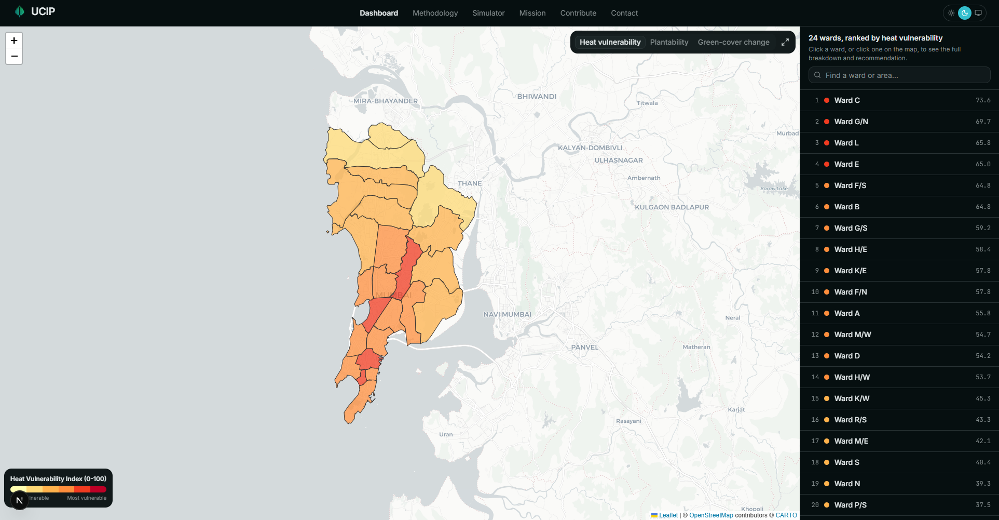
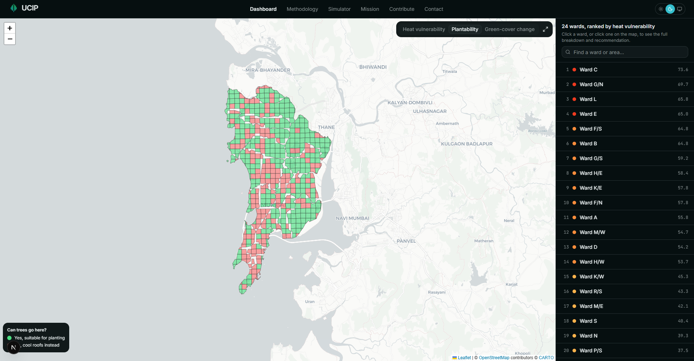
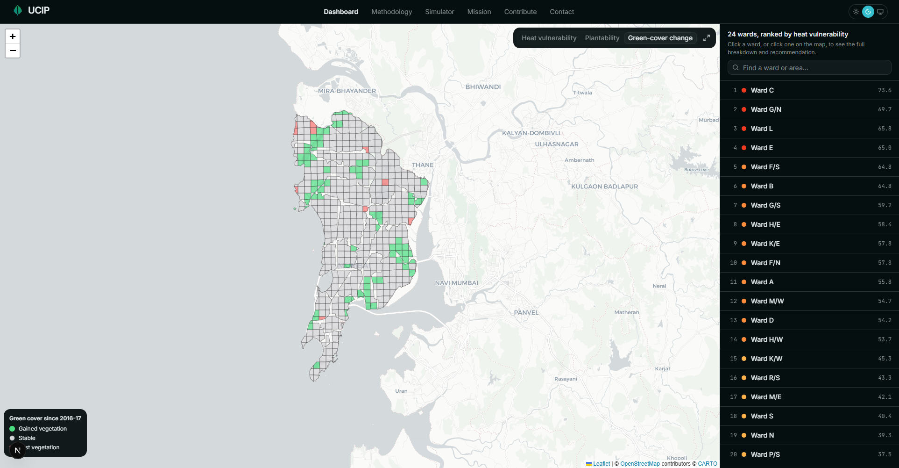
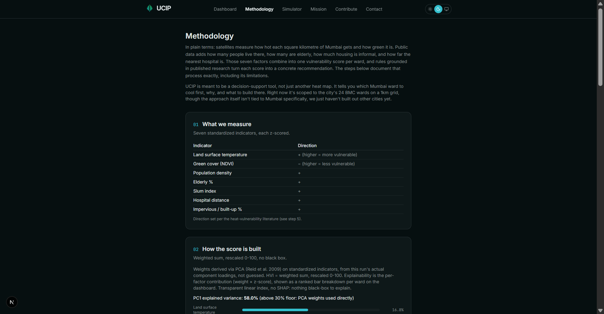
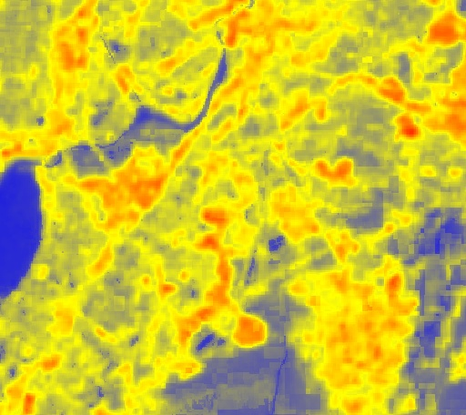
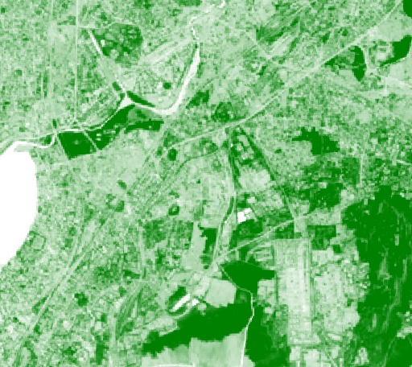

Tells Mumbai's city planners which of the 24 BMC wards to cool first, why, with what intervention, and where a fixed budget goes.
| Student name | Anay Dhawan |
| School name | NES International School Mumbai |
| Grade | 11 (IBDP Year 1) |
| Selected domain | PLANET |
| Focus area | Urban heat resilience / climate adaptation decision-support |
Mumbai heats unevenly. Slums, bare land, and concrete trap the most heat, but the city has no ward-by-ward, evidence-based way to decide where cooling money goes first. Existing plans set city-wide goals and stop there.
Slum households in heat-trapping housing, the elderly, and anyone far from a hospital. The people most at risk live exactly where the data is thinnest.
Heat kills more people in India than any other weather hazard. Ahmedabad's Heat Action Plan saves an estimated 1,190 lives a year by targeting action locally (Knowlton et al. 2014). Mumbai's own climate plan names heat as a priority but never gets past city-level strategy to a method for picking which ward first.
Every dense tropical city faces this. UCIP starts with Mumbai's 24 BMC wards, where IIT Bombay's remote-sensing work already shows sharp heat-island effects over informal housing (Mehrotra, Bardhan and Ramamritham 2018).
No existing tool does all five things a planner actually needs: ward-level ranking, per-factor explanations, an intervention engine, an ecological check, and a budget layer. Most also overstate their own certainty and stay quiet about where their data is a proxy.
UCIP scores a Heat Vulnerability Index for each of Mumbai's 24 wards from satellite and demographic data, weighted by the peer-reviewed Reid et al. 2009 method rather than guesswork. Every ward gets a transparent per-factor breakdown, and the ranking is stress-tested by perturbing the weights ±20% to confirm it holds.
That index feeds a rule-based recommendation engine where every suggestion carries a citation. An ecological filter checks first: native trees where restoration actually makes sense (Bastin et al. 2019), cool roofs instead wherever planting would backfire over native grassland (Veldman et al. 2019). It's not another "plant trees everywhere" map.






Mumbai already knows it's getting hotter. UCIP turns that diagnosis into a decision: which ward first, why, what to build, at what cost. The same method works for any Indian city on the same free data (Landsat, WorldPop, OSM, GHSL). Every limitation is stated up front: proxy data flagged, land-surface temperature never confused with air temperature, coefficients marked as borrowed from other cities, not Mumbai-measured.